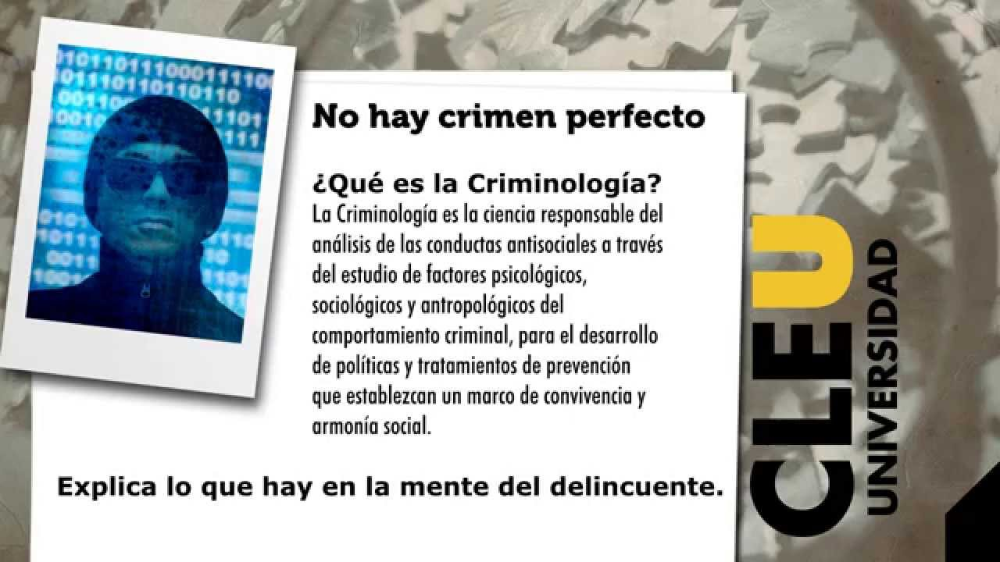
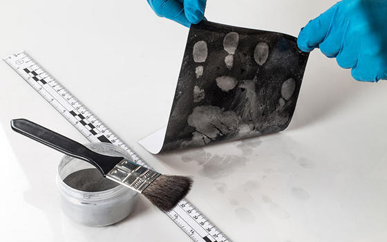

|  | ||
|  |
Un licenciado en Criminología es un profesionista preparado para afrontar las realidades sociales de inseguridad que vive el país, líder comprometido con la sociedad, propositivo, que busque continuamente una tendencia preventiva; para mejorar el sistema de Justicia Mexicano que vislumbre nuevos modelos y políticas criminológicas, con la capacidad de generar nuevos conocimientos en el estudio del criminal y la víctima para una mejor procuración e impartición de justicia.
- Mantener o restaurar el bienestar del paciente con un enfoque integral que abarca los aspectos biológico, psicológico y social.
- Diagnosticar enfermedades y padecimientos, así como para diseñar su tratamiento de una forma óptima.
- Llevar a cabo técnicas quirúrgicas básicas.
Clínicas y hospitales, centros médicos y de salud, industria farmacéutica o en tu propio consultorio.


 1
1 2
2 3
3 4
4 5
5 6
6 7
7 8
8